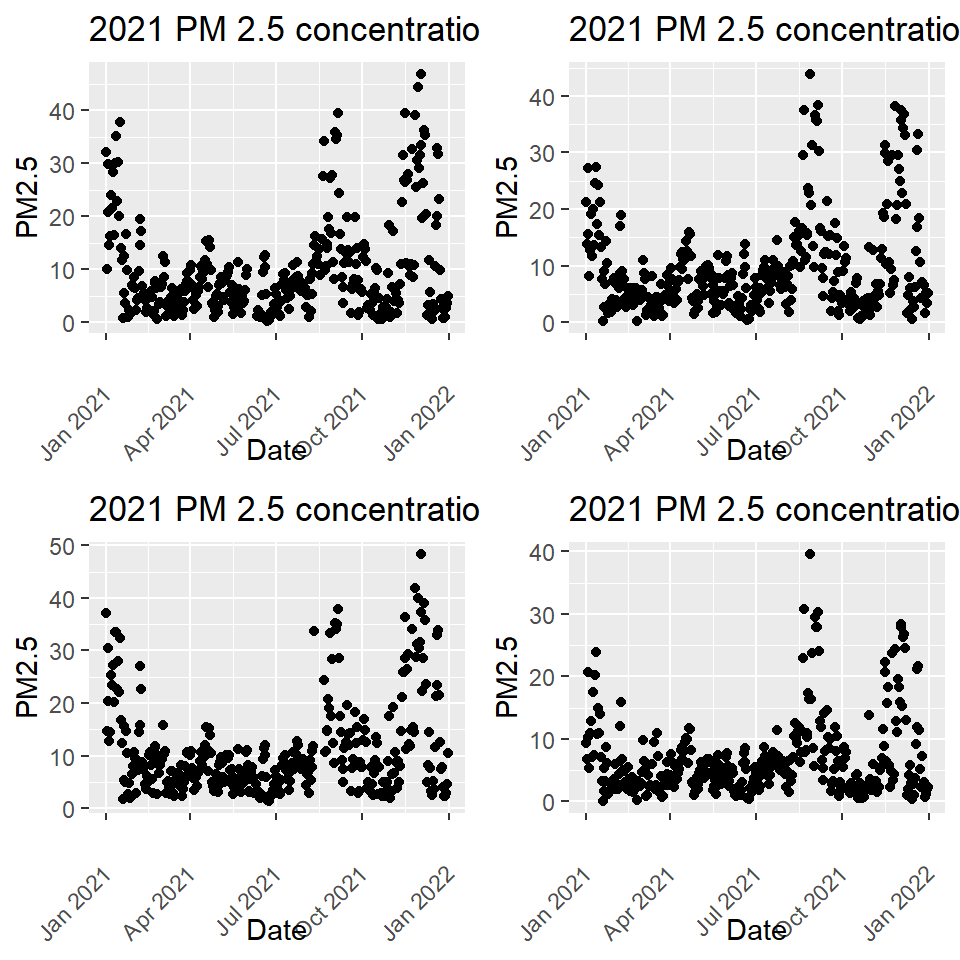

2021 Air Quality in Oakland’s Wealthiest and Poorest Neighborhoods
Background
Oakland has historically been known for their poor air quality which has been exacerbated by the increase in vehicles on the road. East and West Oakland impacted mote then the wealthier northern region due to the proximity of major highways, the port of Oakland, railroad shops, and the local industry. This analysis will be looking into air quality from the wealthy regions and comparing them to the air quality from the poor neighborhoods of Oakland to see if there are any significant differences.
More specifically PM 2.5 will be analyzed due to its detrimental impacts on the environment and human health especially respiratory issues such as asthma. In addition, the year 2021 will be evaluated to view the impacts of new Regulations post the Covid 19 pandemic as most places started opening up their businesses and commuting again.
Data
Data from PurpleAir Monitors provide real-time air quality information as well as hourly, daily, weekly, and monthly averages. This is great for an analysis as hourly data can be much more precise and provide more accurate results of the location being evaluated.
Results
Marina, Bower, FSL, and Sausal represent the 4 disadvantage neighborhoods. There are peaks in winter and early fall compared to spring and summer.
Alameda, Holman, Marina, and Piedmont represent the 4 wealthy neighborhoods. The plots display a general trend across both poor neighborhoods and wealthy neighborhoods and better air quality in the spring and summer months.

Time Series - Classical Decomposition
Since there seems to be a seasonality and trend to the data. I ran a classical decomposition to check seasonality separate from trend. Since the plots were similar, I took a look at FSL from the disadvantage neighborhood and Piedmont from the wealthier neighborhood and ran the analysis. Both decomposition models conclude the trend is driving the overall variation compared to seasonality.

Hypothesis Test
Null Hypothesis: No difference between poor and rich neighborhoods.
Alternative Hypothesis: There is a difference between poor and rich neighborhoods.
The first t-Test is looking at specific monitors, one from a wealthy neighborhood and another from a poor neighborhood. With a p-value of .002, which has a significance level of less than 5%, we can reject the null hypothesis.
To compare, another t-Test was conducted to which averaged the four wealthy neighborhoods and the four poor neighborhoods respectively. That got a much higher p-value that was not statically significant, which meant we could not reject the null hypothesis.
Welch Two Sample t-test
data: green_zones$pm2_5_ala and red_zones$pm2_5_bow
t = -3.035, df = 711.23, p-value = 0.002493
alternative hypothesis: true difference in means is not equal to 0
95 percent confidence interval:
-3.649430 -0.782455
sample estimates:
mean of x mean of y
9.778493 11.994435
Welch Two Sample t-test
data: red_zones$PMean and green_zones$PMean
t = 0.97955, df = 607.81, p-value = 0.3277
alternative hypothesis: true difference in means is not equal to 0
95 percent confidence interval:
-0.6238593 1.8655377
sample estimates:
mean of x mean of y
9.789116 9.168277 Discussion and Future Research
There is still much more to unpack and more testing would be required. The hypothesis test was inconclusive as comparing two separate air monitor had statistical significance, but once they were averaged the p-value was too high for their to be any significance.
There were many limitations to the project. Since I focused on the year 2021, I was not able to measure seasonality as it should have been. The data had some missing values which could be due to monitor malfunctioning or being broken for a period of time. It is also worth noting that PurpleAir monitors are purchased and installed by individuals and many may not be able to afford them. Therefore, we may not have air monitor data from the most disadvantage neighborhoods to the extent the wealthier neighborhoods do.
References
CalEPA. “Pollution and Prejudice.” ArcGIS StoryMaps, Esri, 17 Aug. 2021, https://storymaps.arcgis.com/stories/f167b251809c43778a2f9f040f43d2f5.
“PurpleAir: Real-Time Air Quality Monitoring.” PurpleAir, Inc., https://www2.purpleair.com/.
“State of Global Air.” Health Impacts of PM2.5 | State of Global Air, https://www.stateofglobalair.org/health/pm.